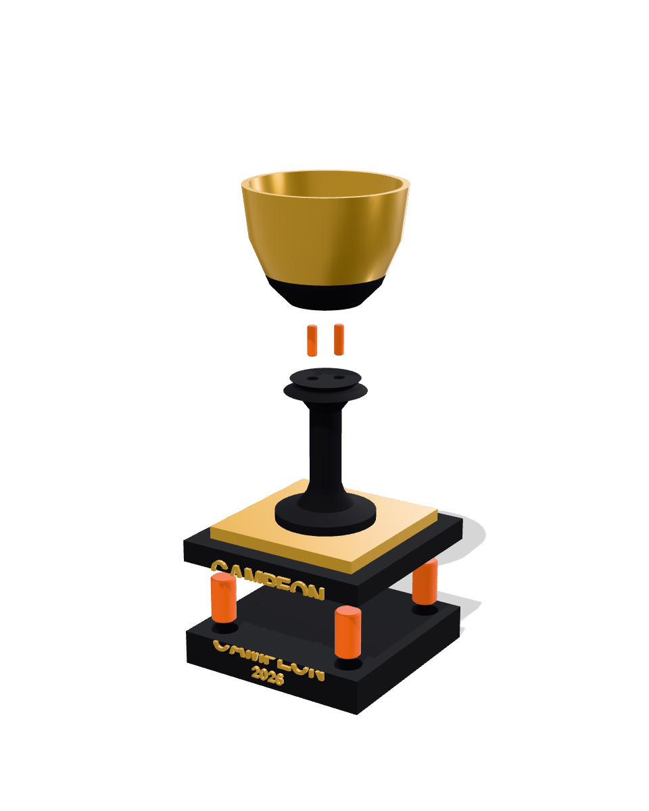
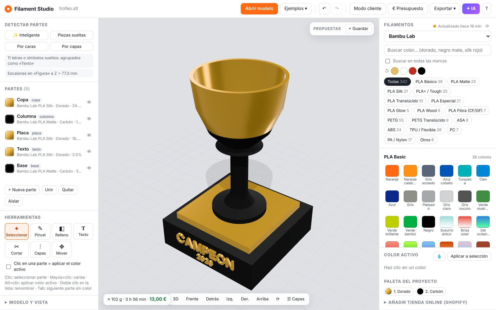
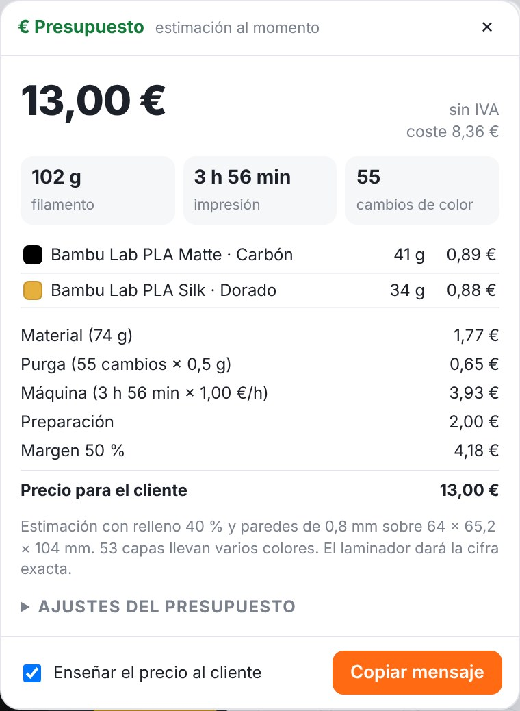
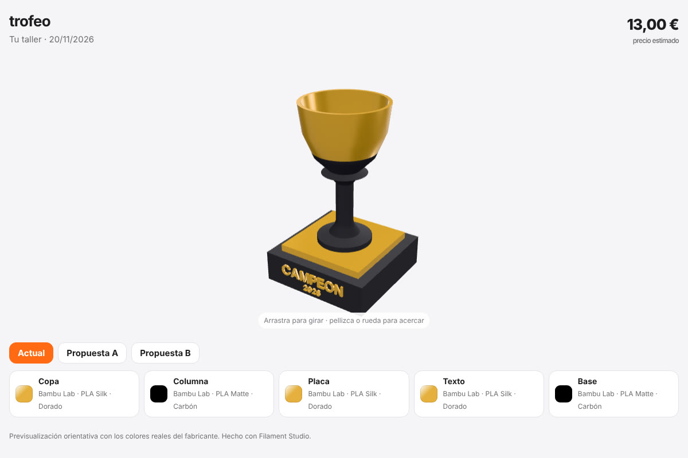

Córtalo por donde quieras.
Justo donde la copa se une a la columna, en horizontal, en vertical o inclinado. Las tapas quedan cerradas y cada trozo, listo para imprimir.
Para talleres de impresión 3D
Abre la pieza, elige con tu cliente colores reales en la videollamada, dale el precio al momento y mándala a Bambu Studio. Todo en una pantalla.
Cortar en piezas
Justo donde la copa se une a la columna, en horizontal, en vertical o inclinado. Las tapas quedan cerradas y cada trozo, listo para imprimir.
La app mide el grosor de la sección y cuánto material hay detrás: elige pasadores de Ø3 a Ø12 mm, cuántos y dónde, sin tocar paredes ni escalones. Si un lado es fino, usa espigas.
Cada pieza se tumba por su cara plana y se reparte en la cama. El 3MF lleva una pieza por objeto y el ZIP de STL incluye los pasadores y cómo montarlo.

Texto 3D
Escribe un nombre, una fecha o una dedicatoria y haz clic en la pieza: aparece en relieve sobre esa cara, derecho según la vista, como una parte nueva lista para su color. Con tildes y eñes.
Partes detectadas solas (base, copa, columna, texto), catálogo de filamentos a la derecha y la pieza en el centro. Con el modo cliente, solo la pieza y sus colores para compartir pantalla.

Peso de cada color, purga de los cambios de color capa a capa, tiempo y tu margen. El mensaje, listo para WhatsApp.

La base en negro mate y el texto dorado silk
Hecho: base en PLA Matte Carbón y texto en PLA Silk Dorado.
También corta en piezas y escribe nombres: «córtala para que quepa en mi A1 mini».
Un clic crea el 3MF con los colores exactos y lo abre. También OrcaSlicer, OBJ con colores y STL.
Guarda varias combinaciones y cambia entre ellas con un clic. O mándale una imagen con todas lado a lado.
ΔE 1,8 idéntico a la vista
Marca las bobinas que tienes y la app te avisa si el cliente elige una que te falta, con la más parecida de tu taller.
La pieza girando con sus colores, con rótulo y el nombre de tu taller. En MP4, listo para WhatsApp.
Mándale un visor 3D en un solo archivo: gira la pieza con sus colores, compara las propuestas A·B·C y ve el precio. Si su móvil no lo abre en 3D, ve igualmente la imagen y la leyenda.

Presentación
| Bambu Studio · OrcaSlicer | Filament Studio | |
|---|---|---|
| Para qué | Preparar la impresión: capas, soportes y G-code | Decidir el diseño y el precio con el cliente |
| Colores | Filamento 1, 2, 3… | Catálogo real por marca, tipo y acabado, con tus bobinas |
| Cortar | Conectores puestos a mano | Anclajes calculados según el grosor de la pieza |
| Precio | Peso y tiempo tras laminar | Presupuesto al momento, con purga y margen |
| Para el cliente | — | Modo cliente, propuestas A·B·C, imagen, vídeo 360° y visor 3D |
No. Con AMS, el 3MF ya lleva cada color en su zona. Sin AMS, puedes cambiar de filamento por capa o cortar la pieza para imprimir cada parte de un color y pegarla.
Sí. El catálogo se actualiza cuando hay conexión y, si no la hay, usa la copia incluida. Solo la IA necesita internet.
Son los HEX que publican las marcas. Cada pantalla los muestra un poco distinto, así que son orientativos, igual que en la web del fabricante.
Todo se queda en tu ordenador: la app funciona en local y solo se conecta para leer el catálogo y, si la activas, para la IA.
Personaliza. Imprime. Entrega.
Descargar beta para WindowsBeta para Windows 10 y 11. El enlace de descarga estará aquí muy pronto.